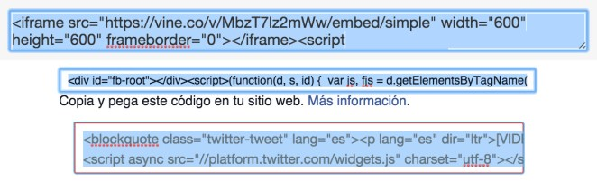

5.1 Qué decir
Lo más importante antes de sentarse a escribir cualquier cosa, es saber qué es lo que se quiere decir. Para entenderlo mejor: si tuvieras que resumir todo tu artículo en pocas palabras, ¿cómo lo harías?
Una vez que ya está claro de qué vas a hablar, cómo lo titularás, es momento de empezar a entender cómo hacerlo y con qué recursos.
5.2 Cómo decirlo
El tono
¿Cómo le hablarías a tus lectores? Es importante tener en cuenta a quién le estás hablando. ¿A alguien de tu edad? ¿A una comunidad en particular? ¿Cómo son ellos?
Si le hablas a millennials, afortunadamente ya sabemos muy bien cómo hablarles: ser breve, atractivo, cercano e informal pero con buenos datos y contenido original y soporte en imágenes.
Pero si escribes para un público diferente, deberías pensar en qué están buscando, qué necesitan y cómo consumen contenidos habitualmente.
Imagina un diario deportivo. ¿Cómo le habla a sus lectores? ¿Y una revista para adolescentes? ¿O de negocios? Las diferencias en el tono, además de la temática, es lo que determina qué público consumirá el contenido.
Más allá de la temática y el tipo de lenguaje que uses en tu artículo, hay dos consejos que aplican para todo tipo de contenido por igual:
El lenguaje
– No hables en código y evita el lenguaje “interno” Los términos que usas al hablar con tus amigos o que son muy específicos de una disciplina o ámbito particular pueden hacer que mucha gente no entienda de que hablas.
– No uses en exceso palabras en inglés ni en otros idiomas A menos que sea absolutamente necesario y que el término no tenga traducción, siempre es preferible hablar en un mismo idioma.
5.3 Con qué recursos hacerlo
Estamos en Internet. Las letra negras sobre fondo blanco nunca van a dejar de servir, pero hoy en día no aprovechar todo el potencial de los contenidos multimedia es dejar de lado una parte muy importante del espectro de la comunicación digital.
Por eso, vamos a hacer un breve repaso por algunos posibles recursos y herramientas para apoyar tus contenidos:
Embeber e insertar, los botones que siempre deberías buscar:
Ya sea Instagram, Facebook, Vine o Twitter, casi todas las redes sociales y herramientas de generación y distribución de imágenes, videos y mensajes, cuentan con la opción de insertar o embeber contenido.
Esta opción casi siempre se esconde bajo un menú que se despliega al clickear sobre un ícono de tres puntos.
Una vez seleccionada la opción, te encontrarás con una caja repleta de código que no hace falta comprender, basta con seleccionar y copiar.

Este código se puede pegar en el Editor de El Meme, en tu WordPress, Tumblr, Medium o básicamente en cualquier plataforma de blogging y distribución de contenido.
Pero… ¿qué insertar exactamente?
Facebook:
La red social por excelencia. Donde “están todos”.
Lo que abundan son fotos de familia y amigos, fiestas, viajes, comida. Pero también hay posteos larguísimos con opiniones muy personales acerca de prácticamente cualquier temática, así como memes y videos de todo tipo.
Por estar atento a estas cosas compartidas a través de Facebook, varios textos nacidos en Facebook terminaron por viralizarse en El Meme y otras redes sociales. Por ejemplo, “Forra del orto”, un texto eliminado por Facebook hoy se hace viral en todo internet y “Messi pecho frío”, un texto de un periodista argentino que se viralizó por todas las redes.
Twitter:
El rey de lo inmediato, la ironía y el sarcasmo. Todas las primicias y lo más viralizable o polémico se comparte primero por Twitter.
Las primicias conviven con las peleas entre miembros de la farándula, se “filtran” fotos y se difunden links. Cuando algo es realmente interesante o llamativo, en Twitter se multiplica a la velocidad de la luz.
Instagram:
Una red que entra por los ojos en formato mobile. Los textos acá no existen. La imagen es la protagonista indiscutida.
Los hashtags son los que organizan el contenido y los que posibilitan que usuarios que no te siguen puedan ver tus imágenes cuando hacen búsquedas.
Muchos usuarios se dedican a compartir imágenes sobre personajes como El esqueleto que revolucionó Instagram y tiene miles de seguidores. O comparten su vida pero por algún detalle en particular, destacan por sobre los demás, como Hay una abuela que es fashionista y tiene cuenta de Instagram o la cola que siguen más de un millón y medio de personas en Instagram.
También hay gente que recopila fotografías de otros usuarios como Los “niños ricos” de Instagram muestran todo y gente que usa esta maravillosa red social para compartir su arte, como Este ilustrador añade dibujos en fotos de Instagram y quedan geniales.
YouTube / Vimeo / Vine / Periscope:
Ya vimos Facebook, Twitter e Instagram. ¿Llegamos al horizonte y el mundo de las redes sociales terminó? Al contrario, recién comienza.
El consumo de video online no ha parado de crecer exponencialmente en los últimos años y ningún contenido hoy en día está completo sin un video.
Por eso las redes sociales en auge por estos días del 2017 son las que están relacionadas a la transmisión de video:
– Cortitos y en Vivo: Snapchat, Instagram, Facebook
– Curados y de alto impacto visual en Vimeo
– Virales y de alcance masivo en YouTube
Hay un lugar para cada video en Internet, y es muy importante saber aprovechar este recurso. Buscar videos que ayuden a sostener una idea o ampliar la información. Siempre habrá un video justo, sólo hay que saber buscarlo.
Ya sabemos… qué decir, cómo elegir el tono y el lenguaje adecuados, y sabemos qué herramientas nos pueden ayudar a transmitir el mensaje que queremos
Listos para la siguiente lección?


¿Qué te parece?